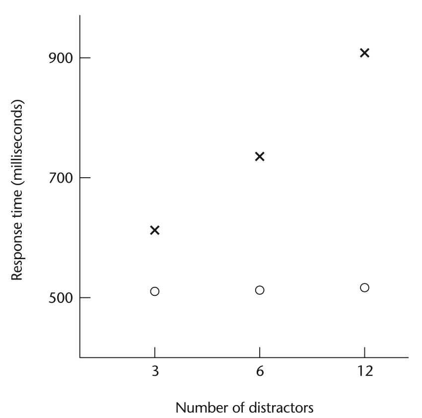
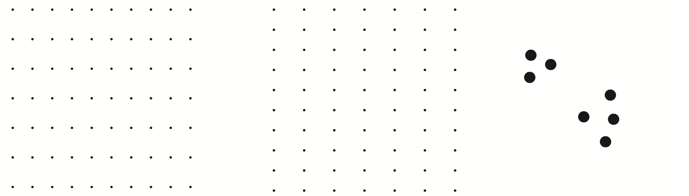
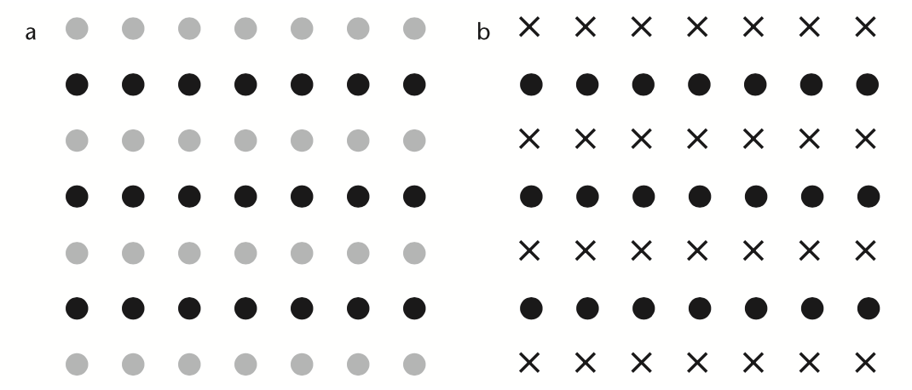
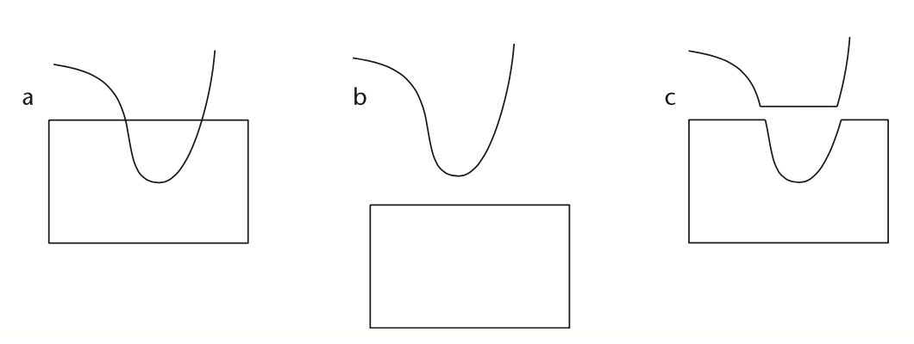
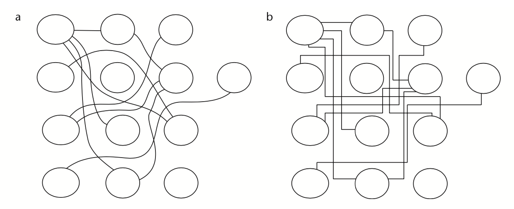

Percepción
IIC2026
Atención preatentiva y organización perceptiva
Percepción
IIC2026
Atención preatentiva
Mecanismo que determina qué objetos quedan disponibles primero para la atención consciente.
¡Hay canales visuales que se procesan de forma preatentiva!
21708616776870613452187261827601208544887026
20854488870613452187261702217086167768276016
77687061387026722170812085445218760486166182
21708616776870613452187261827601208544887026
20854488870613452187261702217086167768276016
77687061387026722170812085445218760486166182
Atención preatentiva
Un aspecto visual se considera preatentivo si el tiempo que demora en buscarse un objetivo es prácticamente independiente del número de distractores.
(Fuente: Libro "Information Visualization - Perception for Design" )
(Fuente: Sitio Perception in Visualization )

(Fuente: Libro "Information Visualization - Perception for Design" )
Organización perceptiva
Organización perceptiva
Organización e identificación de patrones simples sobre lo observado.
Leyes de Gestalt:
- Proximidad
- Similaridad
- Conectividad
- Continuidad
- ¡Y hay más!
Proximidad
Objetos cercanos se perciben como grupos

(Fuente: Libro "Information Visualization - Perception for Design" )
Similaridad
Elementos similares se agrupan juntos y aquellos diferentes se separan.

(Fuente: Libro "Information Visualization - Perception for Design" )
Conectividad
Conexiones gráficas agrupan de forma más obvia a objetos visuales.

(Fuente: Libro "Information Visualization - Perception for Design" )
Continuidad
Tendemos a percibir entidades que son suaves y continuas que aquellas con cambios abruptos.

(Fuente: Libro "Information Visualization - Perception for Design" )
Continuidad
Tendemos a percibir entidades que son suaves y continuas que aquellas con cambios abruptos.

(Fuente: Libro "Information Visualization - Perception for Design" )